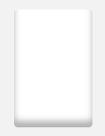

盒阴影
·
Yin灏
示例
.profile-photo {
box-shadow: 0.25em 0.25em 0.5em rgba(0, 0, 0, 0.3);
}
扩展半径：调整阴影大小
比如，可以在模糊半径的值后面再加一个值，表示 扩展半径，用于扩展阴影的大小。这个值默认为 0，即阴影与所属元素一样大，增大这个值，阴影相应增大，负值导致阴影缩小。
div:nth-child(1) {
box-shadow: 1em 1em 0.5em 0.5em rgba(0, 0, 0, 0.3);
}
div:nth-child(2) {
box-shadow: 1em 1em 0.5em -0.5em rgba(0, 0, 0, 0.3);
}
内阴影 inset
inset 关键字，这个关键字可以为元素应用内阴影，即把元素当成投影表面，可以创造一种背景被 “镂空” 的效果，比如，可以给个人页面顶部背景应用内阴影，制造一种在页面上凹陷或者被头像及其他页面内容并遮住的感觉。
多阴影
也可以给一个元素应用多个阴影，以逗号分隔多组值。
div:nth-child(1) {
box-shadow: 0 0 0 10px #1c318d, 0 0 0 20px #3955c7, 0 0 0 30px #546dc7, 0 0 0
40px #7284d8;
}